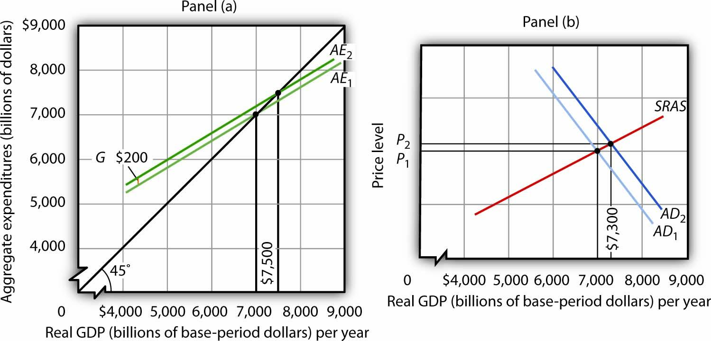
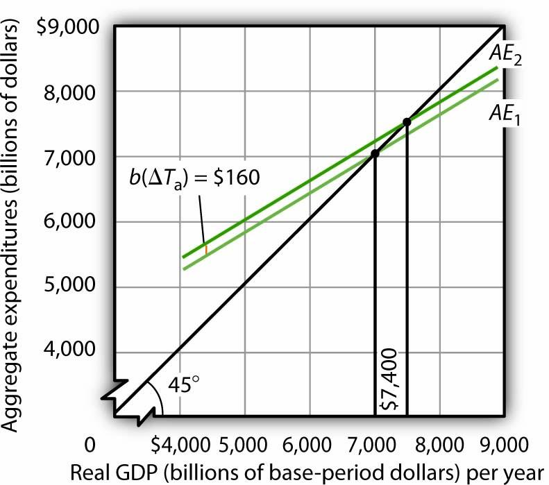
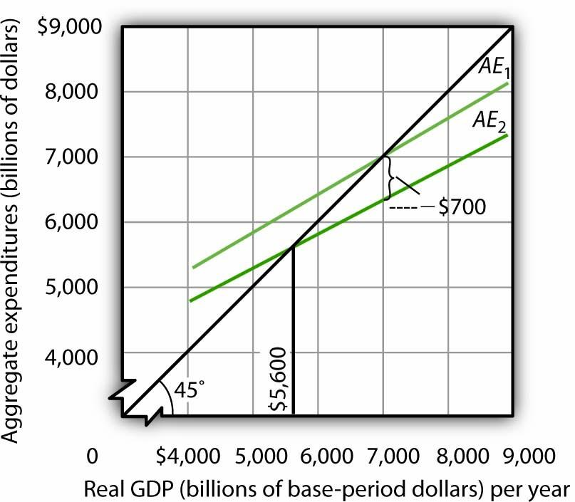

In this appendix, we use the aggregate expenditures model to explain the impact of fiscal policy on aggregate demand in more detail than was given in the chapter on government and fiscal policy. As we did in the chapter, we will look at the impact of various types of fiscal policy changes. The possibility of crowding out was discussed in the fiscal policy chapter and will not be repeated here.
All other things unchanged, a change in government purchases shifts the aggregate expenditures curve by an amount equal to the change in government purchases. A $200-billion increase in government purchases, for example, shifts the aggregate expenditures curve upward by $200 billion. A $75-billion reduction in government purchases shifts the aggregate expenditures curve downward by that amount.
Panel (a) of Figure 36.1 "An Increase in Government Purchases" shows an economy that is initially in equilibrium at an income of $7,000 billion. Suppose that the slope of the aggregate expenditures function (that is, b[1 − t]) is 0.6, so that the multiplier is 2.5. An increase of $200 billion in government purchases shifts the aggregate expenditures curve upward by that amount to AE2. In the aggregate expenditures model, real GDP increases by an amount equal to the multiplier times the change in autonomous aggregate expenditures. Real GDP in that model thus rises by $500 billion to a level of $7,500 billion.
Figure 36.1 An Increase in Government Purchases
The economy shown here is initially in equilibrium at a real GDP of $7,000 billion and a price level of P1. In Panel (a), an increase of $200 billion in the level of government purchases shifts the aggregate expenditures curve upward by that amount to AE2, increasing the equilibrium level of income in the aggregate expenditures model by $500 billion. In Panel (b), the aggregate demand curve thus shifts to the right by $500 billion to AD2. The equilibrium level of real GDP rises to $7,300 billion, while the price level rises to P2.
The aggregate expenditures model, of course, assumes a constant price level. To get a more complete picture of what happens, we use the model of aggregate demand and aggregate supply. In that model shown in Panel (b), the initial price level is P1, and the initial equilibrium real GDP is $7,000 billion. That is the price level assumed to hold the aggregate expenditures model. The $200-billion increase in government purchases increases the total quantity of goods and services demanded, at a price level of P1 by $500 billion. The aggregate demand curve thus shifts to the right by that amount to AD2. The equilibrium level of real GDP, however, only rises to $7,300 billion, and the price level rises to P2. Part of the impact of the increase in aggregate demand is absorbed by higher prices, preventing the full increase in real GDP predicted by the aggregate expenditures model.
A reduction in government purchases would have the opposite effect. All other things unchanged, aggregate expenditures would shift downward by an amount equal to the reduction in aggregate purchases. In the model of aggregate demand and aggregate supply, the aggregate demand curve would shift to the left by an amount equal to the initial change in autonomous aggregate expenditures times the multiplier. Real GDP and the price level would fall. The fall in real GDP is less than would occur if the price level stayed constant.
In the remainder of this appendix, we will focus on the shift in the aggregate expenditures curve. To determine what happens to equilibrium real GDP and the price level, we must look at the intersection of the new aggregate demand curve and the short-run aggregate supply curve, as we did in Panel (b) of Figure 36.1 "An Increase in Government Purchases".
A change in autonomous taxes shifts the aggregate expenditures in the opposite direction of the change in government purchases. If the autonomous taxes go up, for example, aggregate expenditures go down by a fraction of the change. Because the initial change in consumption is less than the change in taxes (because it is multiplied by the MPC, which is less than 1), the shift caused by a change in taxes is less than an equal change (in the opposite direction) in government purchases.
Now suppose that autonomous taxes fall by $200 billion and that the marginal propensity to consume is 0.8. Then the shift up in the aggregate expenditures curve is $160 billion (= 0.8 × $200). As we saw, a $200-billion increase in government purchases shifted the aggregate expenditures curve up by $200 billion. Assuming a multiplier of 2.5, the reduction in autonomous taxes causes equilibrium real GDP in the aggregate expenditures model to rise by $400 billion. This is less than the change of $500 billion caused by an equal (but opposite) change in government purchases. The impact of a $200-billion decrease in autonomous taxes is shown in Figure 36.2 "A Decrease in Autonomous Taxes".
Figure 36.2 A Decrease in Autonomous Taxes
A decrease of $200 billion in autonomous taxes shifts the aggregate expenditures curve upward by the marginal propensity to consume of 0.8 times the changes in autonomous taxes of $200 billion, or $160 billion, to AE2. The equilibrium level of income in the aggregate expenditures model increases by $400 billion to $7,400 billion. All figures are in billions of base-year dollars.
Similarly, an increase in autonomous taxes of, for example, $75 billion, would shift the aggregate expenditures curve downward by $60 billion (= 0.8 × $75) and cause the equilibrium level of real GDP to decrease by $150 billion (= 2.5 × $60).
Changes in income tax rates produce an important complication that we have not encountered thus far. When government purchases or autonomous taxes changed, the aggregate expenditures curve shifted up or down. The new aggregate expenditures curve had the same slope as the old curve; the multiplier was the same before and after the change in government purchases or autonomous taxes. When income tax rates change, however, the aggregate expenditures curve will rotate, that is, its slope will change. As a result, the value of the multiplier itself will change.
We saw in the first section of this appendix that when taxes are related to income, the multiplier depends on both the marginal propensity to consume and the tax rate. An increase in income tax rates will make the aggregate expenditures curve flatter and reduce the multiplier. A higher income tax rate thus rotates the aggregate expenditures curve downward. Similarly, a lower income tax rate rotates the aggregate expenditures curve upward, making it steeper.
Suppose that an economy with an initial real GDP of $7,000 billion has an income tax rate of 0.25. To simplify, we will assume there are no autonomous taxes (that is, Ta = 0). So T = tY. Thus, disposable personal income Yd is 75% of real GDP:
Equation 36.16
Equation 36.17
Suppose the marginal propensity to consume is 0.8. A $1 change in real GDP produces an increase in disposable personal income of $0.75, and that produces an increase in consumption of $0.60 (= 0.8 × 0.75 × $1). If the other components of aggregate expenditures are autonomous, then the multiplier is 2.5 (= 1 / [1 − 0.6]).
The impact of a tax rate change is illustrated in Figure 36.3 "The Impact of an Increase in Income Tax Rates". It shows the original aggregate expenditures curve AE1 intersecting the 45-degree line at the income of $7,000 billion. The curve has a slope of 0.6. Now suppose that the tax rate is increased to 0.375. The higher tax rate will rotate this curve downward, making it flatter. The slope of the new aggregate expenditures curve AE2 will be 0.5 (= 1 − 0.8[1 − 0.375]). The value of the multiplier thus falls from 2.5 to 2 (= 1 / [1 − 0.5]).
Figure 36.3 The Impact of an Increase in Income Tax Rates
An increase in the income tax rate rotates the aggregate expenditures curve downward by an amount equal to the initial change in consumption at the original equilibrium value of real GDP found in the aggregate expenditures model, $7,000 billion in this case, assuming no other change in aggregate expenditures. It reduces the slope of the aggregate expenditures curve and thus reduces the multiplier. Here, an increase in the income tax rate from 0.25 to 0.375 reduces the slope from 0.6 to 0.5; it thus reduces the multiplier from 2.5 to 2. The higher tax reduces consumption by $700 billion and reduces equilibrium real GDP in the aggregate expenditures model by $1,400 billion.
At the original level of income, $7,000 billion, tax collection equaled $1,750 billion (again, for this example, we assume Ta = 0, so T = 0.25 × $7,000). At the new tax rate and original level of income, they equal $2,625 billion (0.375 × $7,000 billion). Disposable personal income at a real GDP of $7,000 billion thus declines by $875 billion. With a marginal propensity to consume of 0.8, consumption drops by $700 billion (= 0.8 × $875 billion). The aggregate expenditures curve rotates down by this amount at the initial level of income of $7,000 billion, assuming no other changes in aggregate expenditures occur.
Before the tax rate increase, an additional $1 of real GDP induced $0.60 in additional consumption. At the new tax rate, an additional $1 of real GDP creates $0.625 in disposable personal income ($1 in income minus $0.375 in taxes). Given a marginal propensity to consume of 0.8, this $1 increase in real GDP increases consumption by only $0.50 (= [$1 × (0.8 × 0.625)]). The new aggregate expenditures curve, AE2 in Figure 36.3 "The Impact of an Increase in Income Tax Rates", shows the end result of the tax rate change in the aggregate expenditures model. Its slope is 0.5. The equilibrium of the level of real GDP in the aggregate expenditures model falls to $5,600 billion from its original level of $7,000. The $1,400-billion reduction in equilibrium real GDP in the aggregate expenditures model is equal to the $700-billion initial reduction in consumption (at the original equilibrium level of real GDP) times the new multiplier of 2. The tax rate increase has reduced aggregate expenditures and reduced the multiplier impact of this change (from 2.5 to 2). The aggregate demand curve will shift to the left by $1,400 billion, the new multiplier times the initial change in aggregate expenditures.
In the model of aggregate demand and aggregate supply, a tax rate increase will shift the aggregate demand curve to the left by an amount equal to the initial change in aggregate expenditures induced by the tax rate boost times the new value of the multiplier. Similarly, a reduction in the income tax rate rotates the aggregate expenditures curve upward by an amount equal to the initial increase in consumption (at the original equilibrium level of real GDP found in the aggregate expenditures model) created by the lower tax rate. It also increases the value of the multiplier. Aggregate demand shifts to the right by an amount equal to the initial change in aggregate expenditures times the new multiplier.